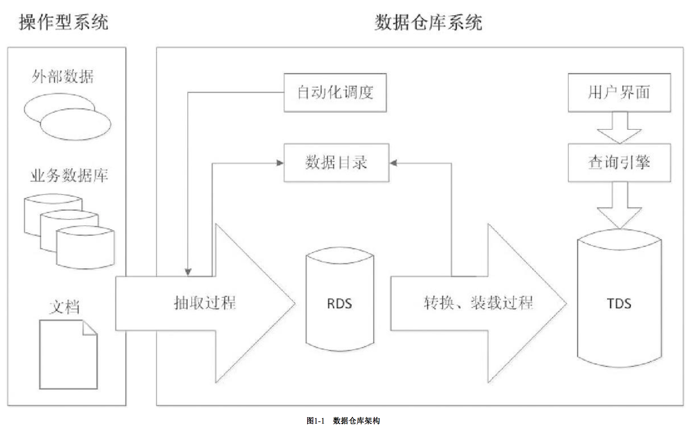
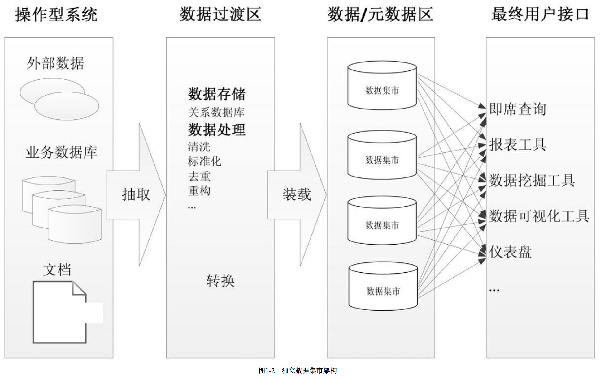
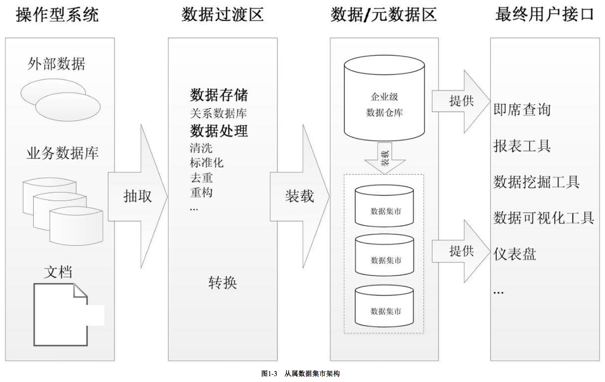
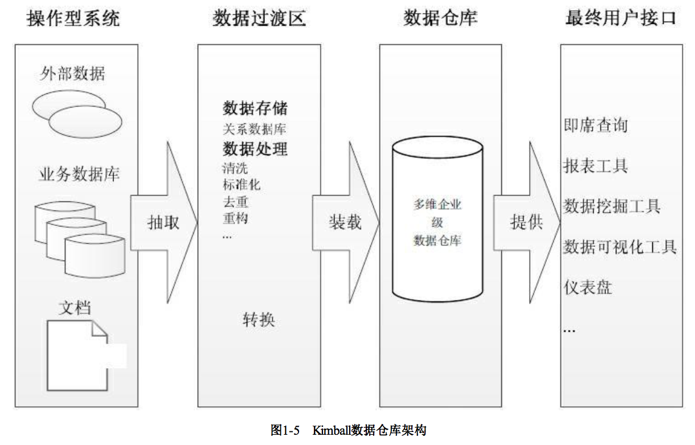
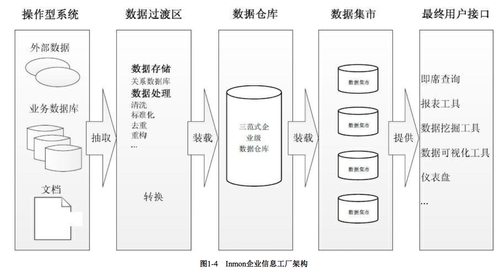
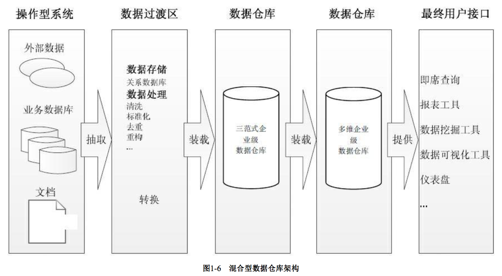

基本架构
“架构”是什么?这个问题从来就没有一个准确的答案。在软件行业，一种被普遍接受的架构定义是指系统的一个或多个结构。结构中包括软件的构建(构建是指软件的设计与实现)，构建的外部可以看到属性以及它们之间的相互关系。这里参考此定义，把数据仓库架构理解成构成数据仓库的组件及其之间的关系，那么就有了如图1-1 所示的数据仓库架构图。

图中显示的整个数据仓库环境包括操作型系统和数据仓库系统两大部分。操作型系统的数据由各种形式的业务数据组成，这其中可能有关系数据库、TXT或CSV文 件、HTML或XML文档，还可能存在外部系统的数据，比如网络爬虫抓取来的互联网数据等，==数据可能是结构化、半结构化、非结构化的==。这些数据经过==抽取、转换和装载(ETL)过程==进入数据仓库系统。
这里把ETL过程分成了抽取和转换装载两个部分。==抽取过程负责从操作型系统获取数据，该过程一般不做数据聚合和汇总==，但是会按照主题进行集成，物理上是将操作型系统的数据全量或增量复制到数据仓库系统的RDS中。==转换装载过程并将数据进行清洗、过滤、汇总、统一格式化等一系列转换操作，使数据转为适合查询的格式， 然后装载进数据仓库系统的TDS中==。传统数据仓库的基本模式是用一些过程将操作型系统的数据抽取到文件，然后另一些过程将这些文件转化成MySQL或Oracle这样的关系数据库的记录。最后，第三部分过程负责把数据导入进数据仓库。
- RDS(RAW DATA STORES)是原始数据存储的意思。将原始数据保存到数据仓库里是个不错的想法。ETL过程的bug或系统中的其他错误是不可避免的，保留原始数 据使得追踪并修改这些错误成为可能。有时数据仓库的用户会有查询细节数据的需求，这些细节数据的粒度与操作型系统的相同。有了RDS，这种需求就很容易实现，用 户可以查询RDS里的数据而不必影响业务系统的正常运行。这里的RDS实际上是起到了操作型数据存储(ODS)的作用，关于ODS相关内容本小节后面会有详细论述。
- TDS(TRANSFORMED DATA STORES)意为转换后的数据存储。这是真正的数据仓库中的数据。大量的用户会在经过转换的数据集上处理他们的日常查询。如果前 面的工作做得好，这些数据将被以保证最重要的和最频繁的查询能够快速执行的方式构建。
- 这里的原始数据存储和转换后的数据存储是逻辑概念，==它们可能物理存储在一起，也可能分开==。当原始数据存储和转换后的数据存储物理上分开时，它们不必使用同样的软硬件。传统数据仓库中，原始数据存储通常是本地文件系统，原始数据被组织进相应的目录中，这些目录是基于数据从哪里抽取或何时抽取建立(例如以日期作为文件或目录名称的一部分); 转换后的数据存储一般是某种关系数据库。
自动化调度组件的作用是自动定期重复执行ETL过程。不同角色的数据仓库用户对数据的更新频率要求也会有所不同，财务主管需要每月的营收汇总报告，而销售人员想看到每天的产品销售数据。作为通用的需求，所有数据仓库系统都应该能够建立周期性自动执行的工作流作业。传统数据仓库一般利用操作系统自带的调度功能(如 Linux的cron或Windows的计划任务)实现作业自动执行。
数据目录有时也被称为元数据存储，它可以提供一份数据仓库中数据的清单。 用户通过它应该可以快速解决这些问题:
- 什么类型的数据被存储在哪里
- 数据集的构建有何区别
- 数据最后的访问或更新时间等。
此外还可以通过数据目录感知数据是如何被操作和转换的。==一个好的数据目录是让用户体验到系统易用性的关键==。 查询引擎组件负责实际执行用户查询。传统数据仓库中，它可能是存储转换后数据的(Oracle、MySQL等关系数据库系统内置的)查询引擎，还可能是以固定时间间隔向其导入数据的OLAP立方体，如Essbase cube。 用户界面指的是最终用户所使用的接口程序。可能是一个GUI软件，如BI套件的中的客户端软件，也可能就是一个浏览器
主要数据仓库架构
在数据仓库技术演化过程中，产生了几种主要的架构方法，包括数据集市架构、Inmon企业信息工厂架构、Kimball数据仓库架构和混合型数据仓库架构。
1. 数据集市架构
==数据集市是按主题域组织的数据集合==，用于支持部门级的决策。有两种类型的数据集市:独立数据集市和从属数据集市。
独立数据集市集中于部门所关心的单一主题域，数据以部门为基础部署，无须考虑企业级别的信息共享与集成。例如，制造部门、人力资源部门和其他部门都各自有 他们自己的数据集市。独立数据集市从一个主题域或一个部门的多个事务系统获取数据，用以支持特定部门的业务分析需要。一个独立数据集市的设计既可以使用实体关 系模型，也可以使用多维模型。数据分析或商业智能工具直接从数据集市查询数据，并将查询结果显示给用户。一个典型的独立数据集市架构如图1-2所示。
因为一个部门的业务相对于整个企业要简单，数据量也小得多，所以部门的独立数据集市具有周期短、见效快的特点。如果从企业整体的视角来观察这些数据集市， 你会看到每个部门使用不同的技术，建立不同的ETL的过程，处理不同的事务系统，而在多个独立的数据集市之间还会存在数据的交叉与重叠，甚至会有数据不一致的情 况。从业务角度看，当部门的分析需求扩展，或者需要分析跨部门或跨主题域的数据时，独立数据市场会显得力不从心。而当数据存在歧义，比如同一个产品，在A部门 和B部门的定义不同时，将无法在部门间进行信息比较。

另外一种数据集市是从属数据集市。如Bill Inmon所说，从属数据集市的数据来源于数据仓库。==数据仓库里的数据经过整合、重构、汇总后传递给从属数据集市==。从属数据集市的架构如图1-3所示。 
建立从属数据集市的好处主要有:
- 性能:当数据仓库的查询性能出现问题，可以考虑建立几个从属数据集市，将查询从数据仓库移出到数据集市。
- 安全:每个部门可以完全控制他们自己的数据。
- 数据一致:因为每个数据集市的数据来源都是同一个数据仓库，有效消除了数据不一致的情况。
Inmon企业信息工厂架构 Inmon企业信息工厂架构如图1-4所示，我们来看图中的组件是如何协同工作的。 
- 应用系统: 这些应用是组织中的操作型系统，用来支撑业务。它们收集业务处理过程中产生的销售、市场、材料、物流等数据，并将数据以多种形式进行存储。操作型系统也叫源系统，为数据仓库提供数据。
- ETL过程: ETL过程从操作型系统抽取数据，然后将数据转换成一种标准形式，最终将转换后的数据装载到企业级数据仓库中。ETL是周期性运行的批处理过程。
- 企业级数据仓库: 是该架构中的核心组件。正如Inmon数据仓库所定义的，企业级数据仓库是一个细节数据的集成资源库。其中的数据以最低粒度级别被捕获，存储在满足三范式设计的关系数据库中。
- 部门级数据集市: 是面向主题数据的部门级视图，数据从企业级数据仓库获取。数据在进入部门数据集市时可能进行聚合。数据集市使用多维模型设计，用于数据 分析。重要的一点是，所有的报表工具、BI工具或其他数据分析应用都从数据集市查询数据，而不是直接查询企业级数据仓库。
2. Kimball数据仓库架构
Kimball数据仓库架构如图1-5所示。 
对比上一张图可以看到，==Kimball与Inmon两种架构的主要区别在于核心数据仓库的设计和建立==。Kimball的数据仓库包含高粒度的企业数据，使用多维模型设计，==这也意味着数据仓库由星型模式的维度表和事实表构成==。分析系统或报表工具可以直接访问多维数据仓库里的数据。在此架构中的数据集市也与Inmon中的不同。==这里的数据集市是一个逻辑概念，只是多维数据仓库中的主题域划分，并没有自己的物理存储，也可以说是虚拟的数据集市==。
3. 混合型数据仓库架构
混合型数据仓库架构如图1-6所示。 
所谓的混合型结构，指的是在一个数据仓库环境中，联合使用Inmon和Kimball两种架构。从架构图可以看到，这种架构将Inmon方法中的数据集市部分替换成了一个多维数据仓库，而数据集市则是多维数据仓库上的逻辑视图。使用这种架构的好处是，==既可以利用规范化设计消除数据冗余，保证数据的粒度足够细;又可以利用多维结构 更灵活地在企业级实现报表和分析==。
操作数据存储
操作数据存储又称为ODS，是Operational Data Store的简写，其定义是这样的: ==一个面向主题的、集成的、可变的、当前的细节数据集合，用于支持企业对于即时性的、操作性的、集成的全体信息的需求==。对比1.1节中数据仓库的定义不难看出，操作型数据存储在某些方面具有类似于数据仓库的特点，但在另一些方面又显著不同于数据仓库。
- 像数据仓库一样，是面向主题的。
- 像数据仓库一样，其数据是完全集成的。
- 数据是当前的，这与数据仓库存储历史数据的性质明显不同。ODS具有最少的历史数据(一般是30天到60天)，而尽可能接近实时地展示数据的状态。
- 数据是可更新的，这是与静态数据仓库又一个很大的区别。ODS就如同一个事务处理系统，当新的数据流进ODS时，受其影响的字段被新信息覆盖。
- 数据几乎完全是细节数据，仅具有少量的动态聚集或汇总数据。通常将ODS设计成包含事务级的数据，即包含该主题域中最低粒度级别的数据。
- 在数据仓库中，几乎没有针对其本身的报表，报表均放到数据集市中完成;与此不同，在ODS中，业务用户频繁地直接访问ODS。
在一个数据仓库环境中，ODS具有如下几个作用:
- ==充当业务系统与数据仓库之间的过渡区==。数据仓库的数据来源复杂，可能分布在不同的数据库，不同的地理位置，不同的应用系统之中，而且由于数据形式的多样 性，数据转换的规则往往极为复杂。如果直接从业务系统抽取数据并做转换，不可避免地会对业务系统造成影响。而ODS中存放的数据从数据结构、数据粒度、数据之间的逻辑关系上都与业务系统基本保持一致，因此抽取过程只需简单的数据复制而基本不再需要做数据转换，大大降低了复杂性，同时最小化对业务系统的侵 入。
- 转移部分业务系统细节查询的功能。==某些原来由业务系统产生的报表、细节数据的查询能够在ODS中进行，从而降低业务系统的查询压力==。
- 完成数据仓库中不能完成的一些功能。用户有时会要求数据仓库查询最低粒度级别的细节数据，而数据仓库中存储的数据一般都是聚合或汇总过的数据，并不存储每笔交易产生的细节数据。这时就需要把细节数据查询的功能转移到ODS来完成，而且ODS的数据模型是按照面向主题的方式组织的，可以方便地支持多维分析。 ==即数据仓库从宏观角度满足企业的决策支持要求，而ODS层则从微观角度反映细节交易数据或者低粒度的数据查询要求。==
参考资料
[Book]Hadoop构建数据仓库实践, 第1章第3节 —— 操作型系统与分析型系统